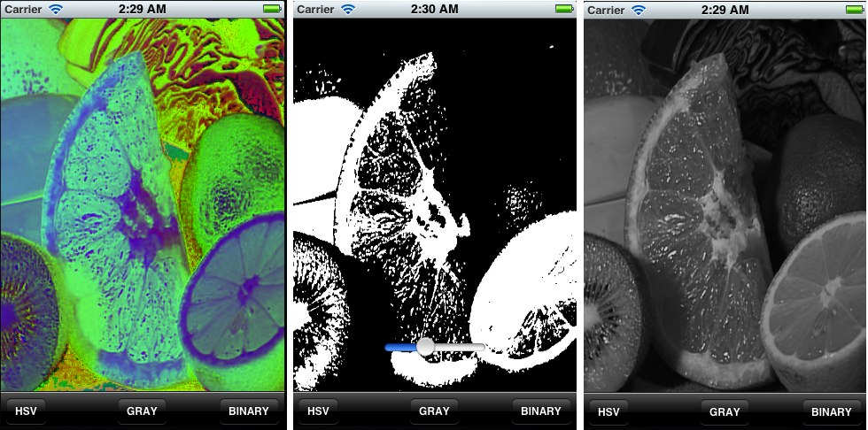

OpenCV iOS - Image Processing
Goal
In this tutorial we will learn how to do basic image processing using OpenCV in iOS.
Introduction
In OpenCV all the image processing operations are usually carried out on the Mat structure. In iOS however, to render an image on screen it have to be an instance of the UIImage class. To convert an OpenCV Mat to an UIImage we use the Core Graphics framework available in iOS. Below is the code needed to covert back and forth between Mat’s and UIImage’s.
- (cv::Mat)cvMatFromUIImage:(UIImage *)image { CGColorSpaceRef colorSpace = CGImageGetColorSpace(image.CGImage); CGFloat cols = image.size.width; CGFloat rows = image.size.height; cv::Mat cvMat(rows, cols, CV_8UC4); // 8 bits per component, 4 channels (color channels + alpha) CGContextRef contextRef = CGBitmapContextCreate(cvMat.data, // Pointer to data cols, // Width of bitmap rows, // Height of bitmap 8, // Bits per component cvMat.step[0], // Bytes per row colorSpace, // Colorspace kCGImageAlphaNoneSkipLast | kCGBitmapByteOrderDefault); // Bitmap info flags CGContextDrawImage(contextRef, CGRectMake(0, 0, cols, rows), image.CGImage); CGContextRelease(contextRef); return cvMat; }
- (cv::Mat)cvMatGrayFromUIImage:(UIImage *)image { CGColorSpaceRef colorSpace = CGImageGetColorSpace(image.CGImage); CGFloat cols = image.size.width; CGFloat rows = image.size.height; cv::Mat cvMat(rows, cols, CV_8UC1); // 8 bits per component, 1 channels CGContextRef contextRef = CGBitmapContextCreate(cvMat.data, // Pointer to data cols, // Width of bitmap rows, // Height of bitmap 8, // Bits per component cvMat.step[0], // Bytes per row colorSpace, // Colorspace kCGImageAlphaNoneSkipLast | kCGBitmapByteOrderDefault); // Bitmap info flags CGContextDrawImage(contextRef, CGRectMake(0, 0, cols, rows), image.CGImage); CGContextRelease(contextRef); return cvMat; }
After the processing we need to convert it back to UIImage. The code below can handle both gray-scale and color image conversions (determined by the number of channels in the if statement).
cv::Mat greyMat; cv::cvtColor(inputMat, greyMat, COLOR_BGR2GRAY);
After the processing we need to convert it back to UIImage.
-(UIImage *)UIImageFromCVMat:(cv::Mat)cvMat { NSData *data = [NSData dataWithBytes:cvMat.data length:cvMat.elemSize()*cvMat.total()]; CGColorSpaceRef colorSpace; if (cvMat.elemSize() == 1) { colorSpace = CGColorSpaceCreateDeviceGray(); } else { colorSpace = CGColorSpaceCreateDeviceRGB(); } CGDataProviderRef provider = CGDataProviderCreateWithCFData((__bridge CFDataRef)data); // Creating CGImage from cv::Mat CGImageRef imageRef = CGImageCreate(cvMat.cols, //width cvMat.rows, //height 8, //bits per component 8 * cvMat.elemSize(), //bits per pixel cvMat.step[0], //bytesPerRow colorSpace, //colorspace kCGImageAlphaNone|kCGBitmapByteOrderDefault,// bitmap info provider, //CGDataProviderRef NULL, //decode false, //should interpolate kCGRenderingIntentDefault //intent ); // Getting UIImage from CGImage UIImage *finalImage = [UIImage imageWithCGImage:imageRef]; CGImageRelease(imageRef); CGDataProviderRelease(provider); CGColorSpaceRelease(colorSpace); return finalImage; }
Output
Check out an instance of running code with more Image Effects on YouTube.